Section 2.2 Gates
Subsection 2.2.1 Hadamard gate
Hadamard gate is one of the most popular gates in quantum computing.
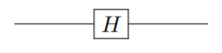
\begin{align}
H=\frac{1}{\sqrt{2}}
\begin{pmatrix}
1&1\\
1&-1
\end{pmatrix}\tag{2.2.1}
\end{align}
The Hadamard operator on one qubit can be written as
\begin{gather}
H =\frac{1}{\sqrt{2}}
\bigg(
\Big(\ket{0}+\ket{1}\Big)\bra{0}
+
\Big(\ket{0}-\ket{1}\Big)\bra{1}
\bigg)
=
\frac{1}{\sqrt{2}}
\bigg(
\ket{0}\bra{0}+\ket{1}\bra{0}
+
\ket{0}\bra{1}-\ket{1}\bra{1}
\bigg)\tag{2.2.2}
\end{gather}
which is the Hadamard gate in Dirac notation. Hadamard operation is a rotation of the Block sphere about y axis by \(\frac{\pi}{2}\text{,}\) followed by a rotation about \(x\) axis by \(pi\text{.}\)
Calculate
- \begin{equation*} H\ket{0} \end{equation*}
- \begin{equation*} H\ket{1} \end{equation*}
Solution.
- \begin{equation*} H\ket{0} =\frac{1}{\sqrt{2}} \Big(\ket{0}+\ket{1}\Big) \end{equation*}
- \begin{equation*} H\ket{1} =\frac{1}{\sqrt{2}} \Big(\ket{0}-\ket{1}\Big) \end{equation*}
Subsection 2.2.2 Pauli X gate
Pauli X gate is also labeled as \(\sigma_1\text{,}\) \(\sigma_x\) or X
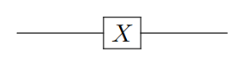
\begin{align}
X= \text{NOT}=
\begin{pmatrix}
0&1\\
1&0
\end{pmatrix}\tag{2.2.3}
\end{align}
Checkpoint 2.2.4.
Calculate
- \begin{equation*} X\ket{0} \end{equation*}
- \begin{equation*} X\ket{1} \end{equation*}
- \begin{equation*} X(X\ket{0}) \end{equation*}
- \begin{equation*} X(X\ket{1}) \end{equation*}
Solution.
- \begin{equation*} X\ket{0}=\ket{1} \end{equation*}
- \begin{equation*} X\ket{1}=\ket{0} \end{equation*}
- \begin{equation*} X(X\ket{0})=\ket{0} \end{equation*}
- \begin{equation*} X(X\ket{1})=\ket{1} \end{equation*}
Subsection 2.2.3 Pauli Y gate
Pauli Y gate is also labeled as \(\sigma_2\text{,}\) \(\sigma_y\) or Y
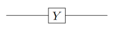
\begin{align}
Y=\begin{pmatrix}
0&-i\\
i&0
\end{pmatrix}\tag{2.2.4}
\end{align}
Checkpoint 2.2.6.
Calculate
- \begin{equation*} Y\ket{0} \end{equation*}
- \begin{equation*} Y\ket{1} \end{equation*}
- \begin{equation*} Y(Y\ket{0}) \end{equation*}
- \begin{equation*} Y(Y\ket{1}) \end{equation*}
Solution.
\begin{equation*}
Y\ket{0}=i\ket{1}
\end{equation*}
\begin{equation*}
Y\ket{1}=-i\ket{0}
\end{equation*}
\begin{equation*}
Y(Y\ket{0})=\ket{0}
\end{equation*}
\begin{equation*}
Y(Y\ket{1})=\ket{1}
\end{equation*}
Subsection 2.2.4 Pauli Z
Pauli Z gate is also labeled as \(\sigma_3\text{,}\) \(\sigma_z\) or Z
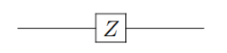
\begin{align}
Z=\begin{pmatrix}
1&0\\
0&-1
\end{pmatrix}\tag{2.2.5}
\end{align}
Checkpoint 2.2.8.
Calculate
- \begin{equation*} Z\ket{0} \end{equation*}
- \begin{equation*} Z\ket{1} \end{equation*}
- \begin{equation*} Z(Z\ket{0}) \end{equation*}
- \begin{equation*} Z(Z\ket{1}) \end{equation*}
Solution.
- \begin{equation*} Z\ket{0}=\ket{0} \end{equation*}
- \begin{equation*} Z\ket{1}=-\ket{1} \end{equation*}
- \begin{equation*} Z(Z\ket{0})=\ket{0} \end{equation*}
- \begin{equation*} Z(Z\ket{1})=\ket{1} \end{equation*}
Subsection 2.2.5 Pauli I gate
Pauli I gate is also labeled as \(\sigma_0\) or I
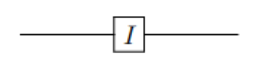
\begin{align}
I=\begin{pmatrix}
1&0\\
0&1
\end{pmatrix}\tag{2.2.6}
\end{align}
Checkpoint 2.2.10.
Calculate
- \begin{equation*} \sigma_0\ket{0} \end{equation*}
- \begin{equation*} \sigma_0\ket{1} \end{equation*}
Solution.
- \begin{equation*} \sigma_0\ket{0}=\ket{0} \end{equation*}
- \begin{equation*} \sigma_0\ket{1}=\ket{1} \end{equation*}
Subsection 2.2.6 Phase gate
Phase gate is written as S.
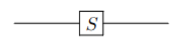
\begin{align}
S=\begin{pmatrix}
1&0\\
0&i
\end{pmatrix}\tag{2.2.7}
\end{align}
Checkpoint 2.2.12.
Calculate
- \begin{equation*} S\ket{0} \end{equation*}
- \begin{equation*} S\ket{1} \end{equation*}
- \begin{equation*} S(S\ket{0}) \end{equation*}
- \begin{equation*} S(S\ket{1}) \end{equation*}
Solution.
- \begin{equation*} S\ket{0}=i\ket{1} \end{equation*}
- \begin{equation*} S\ket{1}=-i\ket{0} \end{equation*}
- \begin{equation*} S(S\ket{0})=\ket{0} \end{equation*}
- \begin{equation*} S(S\ket{1})=-\ket{0} \end{equation*}
Subsection 2.2.7 \(\pi\)/8 gate
\(\pi\)/8 gate is written as T.
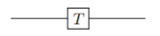
\begin{align}
T=\begin{pmatrix}
1&0\\
0&e^{i\frac{\pi}{4}}
\end{pmatrix}\tag{2.2.8}
\end{align}
Checkpoint 2.2.14.
Calculate
- \begin{equation*} T\ket{0} \end{equation*}
- \begin{equation*} T\ket{1} \end{equation*}
Solution.
- \begin{equation*} T\ket{0}=e^{i\frac{\pi}{8}}\ket{0} \end{equation*}
- \begin{equation*} T\ket{1}=e^{i\frac{\pi}{8}}\ket{1} \end{equation*}
Previous gates aplly on single qubit. The following subsections show the multiqubit gates.
Subsection 2.2.8 Controled-NOT
CNOT gate in the quantum context has two input qubits:
- Control qbit\(\bullet\)
- target qbit\(\oplus\)
This gate acts as following
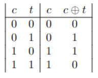
\begin{gather}
\label{eq:CTQbitCNOT}
\ket{c}\ket{t}\to \ket{c}\ket{t\oplus c}\tag{2.2.9}
\end{gather}
Check the XOR and notice this gate is for two qubits.
Checkpoint 2.2.16.
Obtain the Dirac notation
- \(c\to0\) and \(t\to0\)
- \(c\to0\) and \(t\to1\)
- \(c\to1\) and \(t\to0\)
- \(c\to1\) and \(t\to1\)
(\(\ket{00}\) can be written as \(\ket{0,0}\))
Solution.
- \(\displaystyle \ket{00}\bra{00}\)
- \(\displaystyle \ket{01}\bra{01}\)
- \(\displaystyle \ket{10}\bra{11}\)
- \(\displaystyle \ket{11}\bra{11}\)
The gate and matrix representation are,
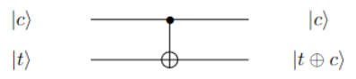
\begin{align}
CNOT=\neg X=
\begin{pmatrix}
1 & 0 & 0 & 0 \\
0 & 1 & 0 & 0 \\
0 & 0 & 0 & 1 \\
0 & 0 & 1 & 0
\end{pmatrix}\tag{2.2.10}
\end{align}
Since
\begin{align}
\begin{pmatrix}
\ket{00}\bra{00} & \ket{00}\bra{01} & \ket{00}\bra{10} & \ket{00}\bra{11} \\
\ket{01}\bra{00} & \ket{01}\bra{01} & \ket{01}\bra{10} & \ket{01}\bra{11} \\
\ket{10}\bra{00} & \ket{10}\bra{01} & \ket{10}\bra{10} & \ket{10}\bra{11} \\
\ket{11}\bra{00} & \ket{11}\bra{01} & \ket{11}\bra{10} & \ket{11}\bra{11}
\end{pmatrix}\tag{2.2.11}
\end{align}
and using CNOT matrix we can cancel out some terms and reduce others to 1, such as
\begin{align}
\begin{pmatrix}
\cancelto{1}{\ket{00}\bra{00}} & \ket{00}\bra{01} & \ket{00}\bra{10} & \ket{00}\bra{11} \\
\ket{01}\bra{00} & \cancelto{1}{\ket{01}\bra{01}} & \ket{01}\bra{10} & \ket{01}\bra{11} \\
\ket{10}\bra{00} & \ket{10}\bra{01} & \ket{10}\bra{10} & \cancelto{1}{\ket{10}\bra{11}} \\
\ket{11}\bra{00} & \ket{11}\bra{01} & \cancelto{1}{\ket{11}\bra{10}} & \ket{11}\bra{11}
\end{pmatrix}\tag{2.2.12}
\end{align}
and we have
\begin{gather}
CX =
\ket{00}\bra{00}
+\ket{01}\bra{01}
+\ket{10}\bra{11}
+\ket{11}\bra{10}.\tag{2.2.13}
\end{gather}
which is the Dirac representation for the CNOT gate.
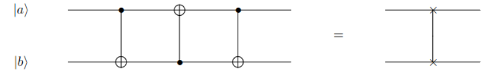
Checkpoint 2.2.19.
Apply CNOT to the state \(\alpha\ket{10}+\beta\ket{11}\)
Solution.
\((\alpha+\beta)\ket{11}\)
Subsection 2.2.9 Contorolled-U
Let U be a two qbit operation with a control and target qbit. This operation sets the control qbit in order U is applied to the target qbit, otherwise the target qbit is left alone.
\begin{gather}
\ket{c}\ket{t}\to \ket{c}U^{c}\ket{t\oplus c}\tag{2.2.14}
\end{gather}
This operation is called controlled-U operation represented by
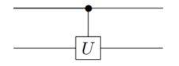
CU operator as Dirac notation
\begin{gather}
CU\ket{\psi} = \bigg(\ket{0}\bra{0}\otimes I + \ket{1}\bra{1} \otimes U\bigg)
\ket{\psi}\tag{2.2.15}
\end{gather}
Subsection 2.2.10 Contorolled-Z
The unitary matrix in the computational basis is,
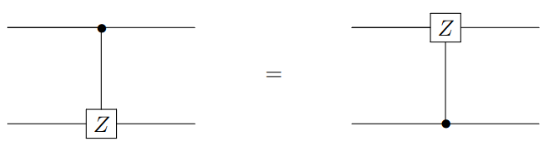
\begin{align}
\text{CZ}=
\begin{pmatrix}
1 & 0 & 0 & 0 \\
0 & 1 & 0 & 0 \\
0 & 0 & 1 & 0 \\
0 & 0 & 0 & -1
\end{pmatrix}\tag{2.2.16}
\end{align}
Checkpoint 2.2.22.
Obtain
- \begin{equation*} CZ\ket{00} \end{equation*}
- \begin{equation*} CZ\ket{01} \end{equation*}
- \begin{equation*} CZ\ket{10} \end{equation*}
- \begin{equation*} CZ\ket{11} \end{equation*}
Solution.
- \begin{equation*} CZ\ket{00}=\ket{00} \end{equation*}
- \begin{equation*} CZ\ket{01}=\ket{01} \end{equation*}
- \begin{equation*} CZ\ket{10}=\ket{11} \end{equation*}
- \begin{equation*} CZ\ket{11}=\ket{11} \end{equation*}